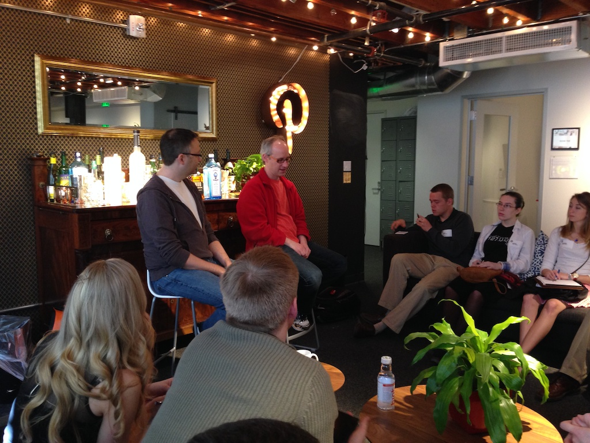

Changing the World, JTerm 2014
The following is a republication of a post I wrote for Luther College's "Ideas and Creations" Blog.
Changing the World: Understanding Entrepreneurship, January 2014
I have never been so glad to leave Minnesota as I was on January 6th. The temperature outside was -24 with a windchill that defied all logic. I was headed for Seattle with 11 Luther students to begin my course on "Understanding Entrepreneurship." I really enjoy traveling with students. Their energy, their enthusiasm, their ability to eat a doughnut burger at the airport before getting on a three hour flight.
Our itinerary for the three-week course includes four days in Seattle, an overnight train ride, six days in San Francisco, four days in Silicon Valley, a continuation of the train ride to Las Angeles where we will conclude the trip. Notice the nice progression of temperatures, from -24 in Minneapolis to 48 in Seattle to 68 here in San Francisco today, to even warmer in LA.
The goals of the course are for the students to meet with people from a variety of companies, from early stage startups to very successful large companies, and everything in between. We’ll meet with technology companies, Venture Capitalists, Public Relations folks, managers, programmers, you name it. The point is for the students to hear stories. Sometimes the most interesting and valuable stories are the stories about failure. Sometimes they are about success. Almost always they are a combination of the two that demonstrate passion, persistence, and the willingness to take a risk. The students are from a variety of majors including CS, management, accounting, marketing, and communications.The mix of majors creates good discussion, and questions from a variety of perspectives.
Some of the companies we have visited you have probably heard of: Microsoft, Pinterest, Google, and Amazon. Many of the people we have talked to at those companies are veterans of smaller companies that have ended up in a large company. Some of the companies we have visited you maybe haven't heard of, and may never hear of: Sqwiggle, Moovweb, Strava, Capsule, and Fullscreen. Some of these smaller companies are still in the "garage phase," they are just a couple of people with a great idea and a huge amount of passion to change the world.
I have connections to many of these companies from my former life as a software entrepreneur, but what is even more exciting is that I am connected to some of these companies by former students, and other Luther Alums. What a great experience it is for the students to see Luther Alumni, here on the west coast, doing great things.

The students all have their own reasons for taking the course. Some want to see if the West coast is right for them. Some want to learn about the different job opportunities in the high tech area. Some are exploring. Some are looking for an internship for next summer at that one cool company.
It is the passion, and the willingness to take a risk on something you believe in that I really hope they take away from this course. Too often, our Lutheran midwest culture teaches us that failure is bad, something to be ashamed of. What they hear in Silicon Valley is that not trying is far worse. Everyone here has stories about failing. One, two, three or more startups that never made it. The reasons are as varied as the people. Something like 90% of newly started companies are not successful. But, people learn from their mistakes, move on, and do something new, sometimes they do something great. Always, they are trying to make a difference. If they learn nothing more than that, the course will be a success.
Comments